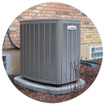

HEATING AND AIR CONDITIONING SERVICES

HEATING

COOLING

SPECIALS

FOR PLUMBING

HEATING
COOLING
SPECIALS
FOR PLUMBING

Minuteman Heating & Air serves Fort Worth, Arlington, Aleda, Alvarado and the surrounding areas with first quality services you can rely upon. Our certified technicians have the experience necessary to ensure a professional repair, installation and maintenance of your heating and air conditioning system. Contact us today to schedule your service, or a free estimate for a new HVAC system.
Furnace Repair Service Areas
Air Conditioning Repair Service Areas

Before the not-so-cold winter arrived in Arlington this year, we were looking at the importance of heating, ventilation, and air conditioning (HVAC) contractors...
Read More
Uneven heat. It may be the No. 1 complaint among Arlington homeowners all winter, no matter how cold it is...
Read More
Fortunately for Arlington homeowners, the winter of 2016 has been, for the most part, pretty darn warm...
Read More